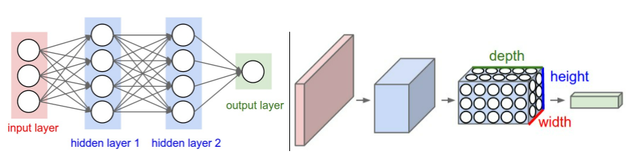
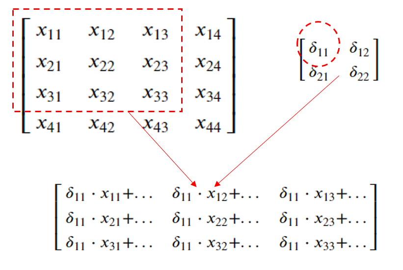
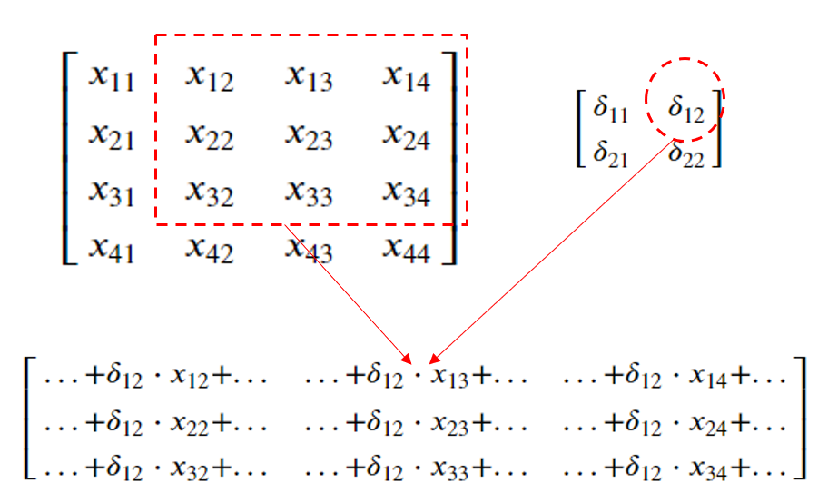
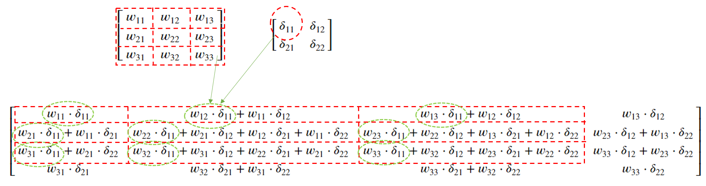
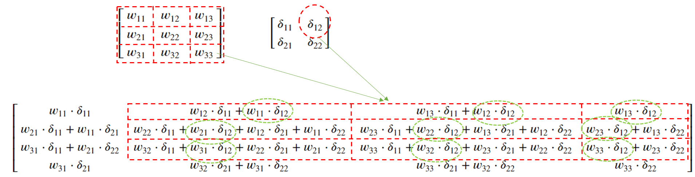
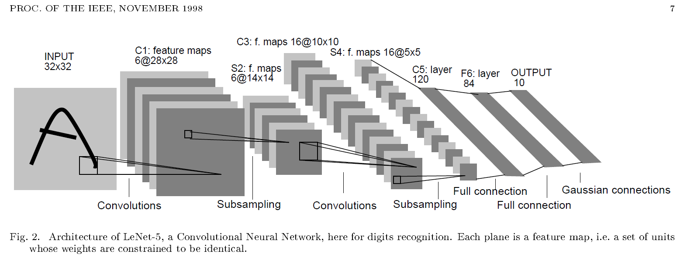

Maqueta de red convolucional#
import numpy as np
from tqdm import tqdm
import pickle
import logging
from scipy import signal as sg
Configuración del proceso
entrenamiento=False
Redes convolucionales#
{kind=link}
Izquierda: Una red neuronal normal de 3 capas. Derecha: Un ConvNet organiza sus neuronas en tres dimensiones (ancho, alto, profundidad), como se visualiza en una de las capas. Cada capa de un ConvNet transforma el volumen de entrada 3D en un volumen de salida 3D de activaciones neuronales. En este ejemplo, la capa de entrada roja contiene la imagen, por lo que su ancho y alto serían las dimensiones de la imagen, y la profundidad sería de 3 (canales rojo, verde, azul).
Una Arquitectura Convolucional tipo estará compuesta por las capas: [INPUT - CONV - RELU - POOL - FC]. Cuyo detalle es:
INPUT [bxhx3] contendrá los valores de píxeles raw de la imagen, en este caso una imagen de ancho b, altura h, y con tres canales de color R, G, B.
La capa CONV calculará la salida de las neuronas que están conectadas a las regiones locales en la entrada, cada una calculando un producto de punto entre sus pesos y una pequeña región a la que están conectadas en el volumen de entrada. Esto puede resultar en un volumen como [BxHxd] si decidimos usar d filtros. Los pesos que conectan los pixels localmente son compartidos y son aprendibles.
La capa RELU aplicará una función de activación por elementos, como el umbral \((max(0,x))\) en cero. Esto deja el tamaño del volumen sin cambios ([BxHxd]).
La capa POOL realizará una operación de downsampling a lo largo de las dimensiones espaciales (ancho, alto), lo que dará como resultado un volumen como [bxhxd], siendo (b,h) inferiores a (B,H). Esta capa no utiliza pesos aprendibles.
La capa FC o densa (es decir, totalmente conectada) calculará los puntajes de clase, lo que resultará en un volumen de tamaño [1x1xK], donde cada uno de los K números corresponde a un puntaje de clase, entre las K categorías del conjunto. Al igual que con las redes neuronales ordinarias y como su nombre indica, cada neurona en esta capa estará conectada a todos los números en el volumen anterior.
Fundamento teórico#
Una red neuronal se puede considerar (LeCun et al.; 1998) un sistema construido como una cascada de módulos, cada uno de los cuales implementa una función
Se toma \(l\) como el índicador de número de capa (layer en inglés).
Dónde \(X_l\) es un vector que representa la salida del módulo, \(W_l\) es el vector de los parámetros entrenables del módulo (y que forma parte del conjunto total \(W\)) y \(X_{l-1}\) es el vector de entrada al módulo (así como la salida del módulo previo).
Se ha implementado una maqueta naíf que implementa 4 tipos de capas: densa o perceptrón, convolucional, agrupación máxima (max-pooling) y aplanado. La capa densa con una programación matricial en numpy se implementa de acuerdo a la documentación previa. La capa convolucional se restringe a convoluciones 2D sin relleno a ceros y con salto 1. La agrupación máxima usa un paso único en ambas direcciones de la imagen. El aplanado es un simple cambio de formato para pasar de las capas convolucionales a las densas.
Al final de la última capa se aplica una función softmax para obtener las probabilidades de cada clase y la pérdida se calcula con una función de croos-entropy.
También se incorpora la optimación Adam que provee un ratio de aprendizaje modulado ([Kingma and Ba, 2014]).
El vector de datos de entrada \(X_0\) va a ser un tensor o matriz de 4 dimensiones (n, c, h, b), donde n representará el número de observaciones en el lote tratado, c el número de canales, h es la altura de la imagen y b es el ancho de la imagen.
Esta estructura de los vectores \(X_l\) se mantiene durante los procesos convolucionales y de agrupación, mientras que las capas densas manejan tensores de la forma (n, m), siendo n el número de observaciones tratadas y m las características de cada observación. Lógicamente, la capa de aplanado efectua reestructuración de las dimensiones con m = c * h * b.
En una capa convolucional los parámetros entrenables están formados por un filtro \(W_l\) cuyas dimensiones son (co, ci, f, f), donde co es el número de canales de salida (los canales del tensor \(X_l\)), ci es el número de canales de entrada (los canales del tensor \(X_{l-1}\)) y f es el tamaño del filtro. Además se incluye un parámetro de bias \(B_l\), que es un vector de dimensiones (co).
Las capas de agrupación y aplanado no tienen parámetros entrenables.
Las capas densas tienen una matriz entrenable \(W_l\) de dos dimensiones (m,p), siendo m el nº de carácteristicas de la salida de la capa (el vector \(X_l\)) y p el número de características de la entrada a la capa (el vector \(X_{l-1}\))
El proceso de retropropagación#
En cuadernos anteriores se ha justificado el proceso de retropropagación de las capas densas que se incluye en la maqueta. Aquí se va a justificar las fórmulas usadas a partir de un ejemplo teórico de dimensión reducida en las condiciones de la convolución expuestas. A continuación se muestra un gráfico del proceso de entrenamiento de un lote de 32 imágenes con la arquitectura LetNet5. En el se indican los pasos forward de cada una de las capas, el final de proceso donde se obtiene las probabilidades de clase con la función softmax y el cálculo de la función de pérdida a partir de la entropía cruzada (\(C\)).
En este proceso final se obtiene el grandiente del coste con respecto a la combinación lineal de la última capa (\(\frac{\partial C}{\partial Z ^L}\)), este gradiente que en el gráfico y en las rutinas programadas utiliza la nomeclatura dA comparte la dimensión con los tensores Z y A de cada capa. El primer proceso de retropropagación (BAC1 en el esquema) arranca con dA8 que es el gradiente de coste de la capa 8. Hay que entender Softmax como una activación específica. Por eso la entrada a esta función es Z8 la combinación lineal de la última capa. La salida de la función softmax para una observación x es un vector probabilidad p con la probabilidad de cada etiqueta. Para todo el lote es una matriz P donde cada fila es la probabilidad por observación. Más adelante comprobaremos que este gradiente de la capa final cuando se usa softmax unido a la función de coste de entropia cruzada resulta algo tan sintético como:
Siendo \(P = softmax(Z^L)\) y \(Y\) una matriz one-hot de las etiquetas reales.
Por tanto los procesos de back-propagación siempre tienen la misma estructura:
Partiendo del gradiente de coste con respecto a la ponderación lineal de su capa (\(\frac{\partial C}{\partial Z ^l}\)), obtener o propagar el de la capa anterior (\(\frac{\partial C}{\partial Z ^{l-1}}\)).
Obtiener el gradiente del coste con respecto a los pesos y bias de su capa, siempre y cuando sean capas entrenables:
{kind=link}
Justificación de la retropropagación en convolución#
Para realizar esta justificación suponemos una única observación y un único canal (n = c = co = ci = 1).
Además para simplificar las fórmulas al máximo se toma en \(X_{n-1}\) h=b=4 en la entrada a la convolución y debido al filtro aplicado la salida se reduce en \(X_n\) a h=b=2 (por no usar relleno a ceros). Además el tamaño del filtro es f=3.
Dada una capa convolucional \(l\) cuya entrada suponemos definida por una matriz
Esta matriz puede estar representando los datos de una observación de la capa de entrada a la red neuronal o la salida de la activación de la capa \(l-1\), que en su caso vendrá notada por \(A^{l-1}\).
En la capa \(l\) tenemos definida una convolución simple (suponemos un canal de entrada y uno de salida) que requiere una matriz de pesos o filtro \(W^l\) y una matriz de bias \(B^l\), suponemos un filtro 3x3 y dado que suponemos un sólo canal el bias es una matriz unidimensional:
Por comodidad sólo se usa superindice con el orden de la capa en las matrices, pero en los elementos de las matrices no se utiliza superíndice, si no sólo el subindice correspondiente. Así se nota la matriz \(W^l\) y sus elementos \(w_{ij}\) en lugar de \(w^l_{ij}\) por no complicar más la notación.
La matriz \(Z^l = W^l \otimes A^{l-1} \oplus B^l\), resultado de aplicar el filtro convolucional y sumar el bias, viene dada por:
Si se aplica la función de activación resulta \(A^l = f(Z^l) = \begin{bmatrix} a_{11} & a_{12} \\ a_{21} & a_{22} \end{bmatrix} \)
En el proceso de retropropagación, al procesar la capa \(l+1\) se habrá retropropagado una matriz con el gradiente del coste con relación a la ponderación lineal \(Z^l\), con igual dimensión que \(Z^l\) y \(A^l\) y que se nota:
El objetivo del proceso de retropropagación de la capa \(l\) es obtener el gradiente del coste en relación a los pesos \(W^l\) y del bias \(B^l\), estos gradientes tiene igual dimensión que \(W^l\) y \(B^l\). Se observa en la notación que es una matriz jacobiana con las derivadas primeras del coste con respecto a cada peso:
Por la regla de la cadena, el término \( \frac{\partial C}{\partial w_{11}}\) se obtiene:
Como \(\frac{\partial C}{\partial a_{ij}} = \delta_{ij}\), la matriz \(\frac{\partial C}{\partial W^l}\), dónde el resultado anterior aparece en el término 1,1 es:
El gradiente del coste con respecto a \(B^l\), usando la regla de la cadena resulta:
Y como \(\frac{\partial a_{ij}}{\partial b} = 1\) se tiene:
Se puede observar que la matriz \(\frac{\partial C}{\partial W^l}\) se construye recorriendo uno a uno los elementos de \(\frac{\partial C}{\partial Z^l}\) a la vez que nos movemos usando las dimensiones del filtro \(W^l\) sobre la matriz \(A^{l-1}\) y los subproductos escalares entre \(\delta_{ij}\) y las submatrices (3x3) se van acumulando en \(\frac{\partial C}{\partial W^l}\). El primer subproducto se ve en la siguiente imagen:
{kind=link}
Y el siguiente subproducto sería:
{kind=link}
El código programado aparece en la función backward de la clase conv2DLayer (ajustando la notación):
dW[co, :] += Aprev[i, :, _h:_h+f, _b:_b+f] * Delta[i, co, _h,_b]
La última operación del proceso de retropropagación de la capa \(l\) consiste en obtener la matriz jacobiana
Que es de la misma dimensión que \(A^{l-1}\), en este ejemplo (4x4), siendo el elemento \((i,j)\) el resultado de obtener
Por la regla de la cadena, el término \( \frac{\partial C}{\partial x_{11}}\) se obtiene:
La matriz jacobiana completa
Entonces \(\frac{\partial C}{\partial Z^{l-1}}\) resulta:
La forma de obtener esta matriz es acumulando el producto escalar
En la matriz \(\frac{\partial C}{\partial Z^{l-1}}\) cuya dimensión coindicen con \(A^{l-1}\), en este ejemplo 4x4, acumulando el resultado matricial, en este caso 3x3, en la submatriz de acuerdo al movimiento del filtro. El primer subproducto escalar se ve en la siguiente imagen:
{kind=link}
Y el siguiente subproducto en:
{kind=link}
El código programado aparece en la función backward de la clase conv2DLayer (ajustando la notación):
DeltaPrev[i, :, _h:_h+f, _b:_b+f] += self.W[co, :] * Delta[i, co, _h,_b]
El código anterior finaliza concatenado el producto de Hadamard de la derivada primera de la función de activación en \(Z^{l-1}\)
Softmax y cross-entropy#
A la salida de la última capa se aplica la función softmax. Si el vector \(z\) tiene la transformación lineal de la última capa (antes de aplicar la función de activación) la probabilidad de la neurona \(j\) de salida es de acuerdo a la función softmax:
Finalmente la pérdida se obtiene con la función entropia cruzada que es:
Dónde \(y_j\) es el valor de la etiqueta en formato one-hot (vector con tantos dígitos como posibles etiquetas hay y que lleva todo ceros y un 1 en la posición que corresponde a la etiqueta).
El uso de softmax y cross-entropy a la salida de la última capa (\(L\)) como se indica hace que el gradiente del coste con respecto a la transformación lineal de esa última capa:
Para comprobarlo en un caso sencillo, se supone que una observación que tiene una transformación lineal:
Sabiendo que las etiquetas reales de esa observación en formato one-hot viene dado por
La probabilidad usando la función softmax es:
La función de coste por entropia cruzada es:
El gradiente del coste con respecto a \(z\) será el vector
Desarrollando la primera componente:
Quedando:
Sumando y restando el término \(y_1e^{z_1}\) la fracción se puede poner
Pero como el vector \(y\) es un formato one-hot, se cumple que \(y_1+y_2+y_3=1\) quedado la expresión:
Haciendo lo mismo con las otras 2 derivadas parciales se ve que el vector gradiente se obtiene así:
Este gradiente es el que aparece en el esquema anterior de LetNet5 identificado como dA8, una matriz de 32 filas y 10 columnas para cada una de las 10 posibles etiquetas. Esta matriz jacobiana es la que arranca el proceso de retro-propagación de los gradientes del coste.
Optimización ADAM#
Al actualizar los pesos y bias con sus gradientes de coste multiplicados por la tasa de entrenamiento (\(\eta\)) en arquitecturas que mezclan capas de diferentes naturaleza surge el inconveniente de que las velocidades de crecimiento de los gradientes no son homogéneas y sería preciso utilizar valores de \(\eta\) diferentes en cada capa.
Como sería muy difícil estimar estos valores en cada capa, hay algoritmos, por ejemplo Root Mean Square Propagation (RMSprop) que utilizan una media móvil que promedia más los valores actuales que los antiguos. A la vez se utiliza un momento de segundo orden para normalizar los elementos del gradiente (pues la raiz cuadrada de de la estimación del momento del segundo orden equivale a la desviación estándar).
ADAM (o estimación adaptativa del momento) añade a RMSprop el cálculo de un momento y es el método más utilizado. Su fórmula es:
Donde \(\epsilon\) es un valor muy próximo a cero (\(10^{-7}\) por ejemplo) para evitar divisiones por cero
Funciones generales#
Show code cell content
class netFuntion(object):
def __init__(self, seed=1):
self.random = np.random.RandomState(seed)
return
def sigmoid(self, x):
#return 1.0/(1.0 + np.exp(-x)) ## versión básica con problemas de desbordamiento en valores x<<<0
#return np.where(x < 0, np.exp(x)/(1.0 + np.exp(x)), 1.0/(1.0 + np.exp(-x)))
#return 1. / (1. + np.exp(-np.clip(x, -250, 250)))
from scipy.special import expit
try:
return expit(x) ##Función sigmoidea de scipy; algo más lenta
except:
print('Error sigmoid en X=', x)
return x
def sigmoid_derivada(self, x):
return self.sigmoid(x)*(1.0-self.sigmoid(x))
def tanh(self, x):
return np.tanh(x)
def tanh_derivada(self, x):
return 1.0 - np.tanh(x)**2
def ReLU(self, x):
return np.maximum(0, x)
def ReLU_derivada(self, x):
return np.where(x <= 0, 0, 1)
def softmax(self, raw_preds):
'''
pass raw predictions through softmax activation function
'''
try:
out = np.exp(raw_preds)
soft = out/np.sum(out) # divide the exponentiated vector by its sum. All values in the output sum to 1.
except:
print('ejecutada excepcion en softmax')
soft = self.stable_softmax(raw_preds)
return soft
def stable_softmax(self, x):
z = x - np.max(x, axis=-1, keepdims=True)
numerator = np.exp(z)
denominator = np.sum(numerator, axis=-1, keepdims=True)
softmax = numerator / denominator
return softmax
def categoricalCrossEntropy(self, probs, label):
'''
Calcula la pérdida de entropía cruzada categórica de las predicciones
Multiplica la etiqueta de salida deseada por el registro de la predicción, y se suman todos los valores en el vector
Se evita calcular el logaritmo de cero sumando un epsilon = 1e-7
'''
entr = 0
for v_pro, v_lab in zip(probs, label):
for _pro, _lab in zip(v_pro, v_lab):
entr -= _lab * np.log(_pro + 1e-7)
return entr
#return -np.sum(label * np.log(probs + 1e-7))
def listToString(self, list):
cadena = ''
for ele in list:
cadena = cadena + ele + '; '
return cadena
def validarOpciones(self, valOpcion, tipOpcion):
if tipOpcion == 'ACTIVACION':
lstOpciones = ['RELU', 'SIGMOID', 'TANH', 'IDENTITY', 'SOFTMAX']
literal = 'Tipo de activación'
elif tipOpcion == 'OPTIMIZADOR':
lstOpciones = ['ADAM', 'GRAD']
literal = 'Optimizador'
else: ## 'PERDIDA'
lstOpciones = ['CROSSENTROPY', 'ERRORCUADRATICO']
literal = 'Función de pérdida'
valOpcion = valOpcion.upper()
assert valOpcion in lstOpciones, literal + ' <' + valOpcion + '> no contemplada. Usar: ' + self.listToString(lstOpciones)
return valOpcion
def activacionPrima(self, tipActiva, A, B):
if (tipActiva == 'RELU'):
A[B<0] = 0
return A
elif (tipActiva == 'SIGMOID'):
return A * self.sigmoid_derivada(B)
elif (tipActiva == 'TANH'):
return A * self.tanh_derivada(B)
else: ## No cambia si es Identity y Softmax (porque sólo se usa en la última capa)
return A
def activacion(self, tipActiva, X):
if (tipActiva == 'RELU'):
return self.ReLU(X)
elif (tipActiva == 'SIGMOID'):
return self.sigmoid(X)
elif (tipActiva == 'TANH'):
return self.tanh(X)
elif (tipActiva == 'SOFTMAX'):
return np.asarray([self.softmax(sp) for sp in X])
else:
return X
def onehot(self, y, n_classes):
"""Convierte las etiquetas en una representación de vectores de base canónica R^K siendo K el total de etiquetas
Parameters
------------
y : array, shape = [n_samples]
Valores objetivo.
Returns
-----------
onehot : array, shape = (n_samples, n_labels)
"""
if n_classes == 2:
onehot = np.zeros((1, y.shape[0]))
for idx, val in enumerate(y.astype(int)):
ilabel = self.Clases_y.tolist().index(val)
onehot[0, idx] = int(ilabel)
else:
onehot = np.zeros((n_classes, y.shape[0]))
for idx, val in enumerate(y.astype(int)):
ilabel = self.Clases_y.tolist().index(val)
onehot[ilabel, idx] = 1.
return onehot.T
Clase para una capa densa#
Show code cell content
class linealLayer(netFuntion):
def __init__(self, neurInp, neurOut, tipActiva):
super().__init__()
self.neurInp = neurInp
self.neurOut = neurOut
self.tipActiva = self.validarOpciones(tipActiva, 'ACTIVACION')
self.W = self.random.standard_normal(size=(neurOut, neurInp)) * 0.01
self.B = np.zeros((neurOut))
self.pesos=True
return
def forward(self, X):
'''
Calcula la transformación lineal por la matriz de pesos W
Hay c_i canales de entrada. La dimensión de X ha de ser c_i mapas
Argumentos:
p -- Tamaño de Pool
X -- Salida de la activación de la capa anterior, numpy array de dimension (n, c_i, h, b) asumiendo c_i canales de entrada
Retornos:
H -- Salida agrupada con dimensión (c_i, h/p, b/p)
'''
assert len(X.shape)==2 or len(X.shape)==4, "La matriz de entrada X deben ser listas de 2 o 4 dimensiones"
# Si la entrada es un mapa que ha devuelto una convolución se aplanan las dimensiones canal, alto, ancho en una
if len(X.shape)==4:
X = np.reshape(X,(X.shape[0], int(X.shape[1]*X.shape[2]*X.shape[3])))
#print('forwardLineal - X.shape=', X.shape)
# Se recogen las dimensiones de los mapas de entrada
(nf_x, nc_x) = X.shape
(nf_w, nc_w) = self.W.shape
(nc_b,) = self.B.shape
assert nc_x == nc_w, 'El numero de columnas de las matrices X y W deben ser iguales'
assert nc_b == nf_w, 'La dimensión del Bias y el nº de filas de W debe ser iguales nc_b='+ str(nc_b) + '_nf_w=' + str(nf_w)
Z = np.dot(X, np.transpose(self.W)) + np.transpose(self.B)
A = self.activacion(self.tipActiva, Z)
return Z, A
def backward(self, dA, Aprev, l):
'''
El cálculo hacia atrás para una capa Densa
Argumentos:
dA: gradiente del costo con respecto a la salida de la capa densa,
matriz numpy de forma (n_H, n_W) asumiendo canales = 1
Apre -- Salida de la activación de la capa previa
W -- Matriz de pesos de la capa actual
l: identifica el nº de capa. Si l==0 es la primera capa oculta
Retornos:
dAprev: gradiente del costo con respecto a la entrada de la capa anterior. Gradiente que se propaga
dW: gradiente de la matriz de peso de la capa actual
dB: gradiente de la matriz de bias de la capa actual
'''
if len(Aprev.shape)==4:
Aprev = np.reshape(Aprev,(Aprev.shape[0], int(Aprev.shape[1]*Aprev.shape[2]*Aprev.shape[3])))
dW = np.dot(dA.T, Aprev)
dB = np.sum(dA, axis=0)
## Propagación del delta dA sobre la capa previa. En la primera capa no tiene sentido la propagación
if l==0:
dAprev = None
else:
dAprev = np.dot(dA, self.W)
return dAprev, dW, dB
Clase para una capa convolucional#
Show code cell content
class conv2DLayer(netFuntion):
def __init__(self, canalInp, canalOut, fSize, tipActiva):
super().__init__()
self.canalInp = canalInp
self.canalOut = canalOut
self.fSize = fSize
self.tipActiva = self.validarOpciones(tipActiva, 'ACTIVACION')
stddev = 1.0/np.sqrt(np.prod((canalOut, canalInp, fSize, fSize)))
self.W = self.random.normal(loc = 0, scale = stddev, size = (canalOut, canalInp, fSize, fSize))
self.B = np.zeros((canalOut))
self.pesos=True
return
def forward(self, X):
'''
Calcula una convolución suponiendo que no hay padding (relleno a ceros) y strike 1 (sin salto)
El filtro es dimension f x f
Por lo tanto el mapa de salida tiene una dimensión que se reduce en f-1 con respecto al de entrada
Hay c_i canales de entrada y c_o canales de salida. La dimensión de X ha de ser c_i mapas
Y los pesos han de ser c_o lista de c_i matrices de dimension f
Argumentos:
W -- Pesos, numpy array con dimension (c_o, c_i, f, f), siendo un filtro individual (f, f)
X -- Salida de la activación de la capa anterior, numpy array de dimension (n, c_i, h, b) asumiendo c_i canales de entrada
Retornos:
A -- Salida convolucionada, numpy array de tamaño (n, c_o, h, b), se asume salto 1 y siempre relleno a ceros
'''
#W = np.asarray(W)
assert len(X.shape)==4, "La matriz de entrada X deben ser listas de 4 dimensiones. X.shape=" + str(X.shape)
assert len(self.W.shape)==4, "La matriz de pesos W deben ser listas de 4 dimensiones. W.shape=" + str(W.shape)
# Se recogen las dimensiones de los mapas de entrada
(n, c_i, h, b) = X.shape
# Se recogen las dimensiones de los pesos
(c_o, _c_i, f, f) = self.W.shape
# Se recoge las dimensiones de los Bias
assert len(self.B.shape)==1 and self.B.shape[0]==c_o, "Bias debe ser de dimensión y con nº igual a canal salida=" + str(self.B.shape)
assert _c_i == c_i, "El nº de canales de entrada en X debe ser igual que al nº canales de entrada en W"
# Inicializa la salida H con ceros
Z = np.zeros((n, c_o, h-(f-1), b-(f-1)))
# Bucle sobre los ejes vertical(h) y la horizontal(b) del mapa de salida
#for i in range(n):
# for co in range(c_o):
# for ci in range(c_i):
# for _h in range(h-(f-1)):
# for _b in range(b-(f-1)):
# x_slice = X[i, ci, _h:_h+f, _b:_b+f]
# Z[i, co, _h,_b] += np.sum(x_slice * self.W[co, ci]) + self.B[co]
# Bucle sobre los ejes vertical(h) y la horizontal(b) del mapa de salida
for co in range(c_o):
for ci in range(c_i):
for _h in range(h-(f-1)):
for _b in range(b-(f-1)):
x_slice = X[:, ci, _h:_h+f, _b:_b+f]
Z[:, co, _h,_b] += np.tensordot(x_slice, self.W[co, ci]) + self.B[co]
A = self.activacion(self.tipActiva, Z)
return Z, A
def backward(self, dA, Aprev, l):
'''
El cálculo hacia atrás para una función de convolución
Argumentos:
dA: gradiente del costo con respecto a la salida de la capa de conv (A),
matriz numpy de forma (n_H, n_W) asumiendo canales = 1
Aprev: Activación de la capa previa
W, B: matrices de peso y bias de la capa actual
shape_A : Tamaño de la activación en la capa actual
Retornos:
dAprev: gradiente del costo con respecto a la entrada de la capa anterior
dW: gradiente del costo con respecto a los pesos del filtro de la capa actual
dB: gradiente dle costo con respecto a los bias del filgro de la capa actual
l: identifica el nº de capa. Si l==0 es la primera capa oculta
'''
#W = np.asarray(W)
assert len(dA.shape)==4, "La matriz de entrada dA deben ser listas de 4 dimensiones. dA.shape=" + str(dA.shape)
assert len(Aprev.shape)==4, "La matriz de entrada Aprev deben ser listas de 4 dimensiones. Aprev.shape=" + str(Aprev.shape)
assert len(self.W.shape)==4, "La matriz de pesos W deben ser listas de 4 dimensiones=" + str(self.W.shape)
# Se recogen las dimensiones de los mapas de entrada
(n, co, h, b) = dA.shape
(n2, c_i, h2, b2) = Aprev.shape
# Se recogen las dimensiones de los pesos
(c_o, _c_i, f, f) = self.W.shape
assert _c_i == c_i, "El nº de canales de entrada en Aprev debe ser igual que al nº canales de entrada en W"
assert n==n2, "El nº de observaciones en Aprev y dA debe ser igual n=" + str(n) + " n2=" + str(n2)
assert h2==h+(f-1), "La altura del mapa previo y actual deben diferir en el filtro. h=" + str(h) + " h2=" + str(h2)
assert b2==b+(f-1), "La anchua del mapa previo y actual deben diferir en el filtro. b=" + str(h) + " b2=" + str(h2)
# Initializing dAprev, dW with the correct shapes
dAprev = np.zeros_like(Aprev)
dW = np.zeros_like(self.W)
dB = np.zeros_like(self.B)
# Inicializamos dAprev con la dimensión de Aprev
dAprev = np.zeros_like(Aprev)
# Bucle sobre los ejes vertical(h) y la horizontal(b) de dA
for i in range(n):
for _h in range(h):
for _b in range(b):
for co in range(c_o):
##Full Convolution 180º rotate Filter
dAprev[i, :, _h:_h+f, _b:_b+f] += self.W[co, :] * dA[i, co, _h,_b]
##Convolution
dW[co, :] += Aprev[i, :, _h:_h+f, _b:_b+f] * dA[i, co, _h,_b]
dB[co] += dA[i, co, _h, _b]
return dAprev, dW, dB
Clase para una capa de agrupación por máximo (max-pooling)#
Show code cell content
class maxPooling(netFuntion):
def __init__(self, pSize, tipActiva):
super().__init__()
self.pSize = pSize
self.tipActiva = self.validarOpciones(tipActiva, 'ACTIVACION')
self.pesos=False
return
def forward(self, X):
'''
Calcula la agrupación por pool, suponiendo un tamaño de pool p
Hay c_i canales de entrada. La dimensión de X ha de ser c_i mapas
Argumentos:
p -- Tamaño de Pool
X -- Salida de la activación de la capa anterior, numpy array de dimension (n, c_i, h, b) asumiendo c_i canales de entrada
Retornos:
H -- Salida agrupada con dimensión (c_i, h/p, b/p)
'''
assert len(X.shape)==4, "La matriz de entrada X deben ser listas de 4 dimensiones"
# Se recogen las dimensiones de los mapas de entrada
(n, c_i, h, b) = X.shape
## Se calcula la nueva dimensión una vez aplicado el pool
n_h = int(h/self.pSize)
n_b = int(b/self.pSize)
# Inicializa la salida H con ceros
H = np.zeros((n, c_i, n_h, n_b))
# Bucle sobre los ejes vertical(h) y la horizontal(b) del mapa de salida
for i in range(n):
for ci in range(c_i):
for _h in range(n_h):
for _b in range(n_b):
x_slice = X[i, ci, self.pSize*_h:self.pSize*(_h+1), self.pSize*_b:self.pSize*(_b+1)]
H[i, ci, _h,_b] = np.max(x_slice)
return H, self.activacion(self.tipActiva, H)
def backward(self, dA, Aprev, l):
'''
El cálculo hacia atrás para una función de convolución
Argumentos:
dA: gradiente del costo con respecto a la salida de la capa de pool (A),
matriz numpy de forma (n_H, n_W) asumiendo canales = 1
Aprev, A: Activación de la capa previa y de la capa actual. Sus dimensiones permiten calcular el pooling
Retornos:
dAprev: gradiente del costo con respecto a la entrada de la capa de conv (Aprev),
matriz numpy de forma (n_H_prev, n_W_prev) asumiendo canales = 1
l: identifica el nº de capa. Si l==0 es la primera capa oculta
'''
##print("backwardPool - dA.shape=" + str(dA.shape))
##print("backwardPool - Aprev.shape=" + str(Aprev.shape))
assert len(Aprev.shape)==4, "La matriz de entrada Aprev deben ser listas de 4 dimensiones. Aprev.shape=" + str(Aprev.shape)
assert len(dA.shape)==4, "La matriz de entrada dA deben ser listas de 4 dimensiones. dA.shape=" + str(dA.shape)
# Se recoge las dimensiones del gradiente del costo con respecto a la salida, dA
(n, c_o, h, b) = dA.shape
(n2, c_o2, h2, b2) = Aprev.shape
assert n==n2 and c_o==c_o2, "El nº de observaciones y canales en dA y Aprev deben ser iguales. n=" + str(n) + "; n2="
#str(n2) + ";c_o=" + str(c_o) + ";c_o2=" + str(c_o2)
p = int(h2/h)
p2 = int(b2/b)
assert p==p2 and p>1 and p==self.pSize, "Padding incorrecto p=" + str(p) + ";p2=" + str(p2) + ";self.pSize=" + str(self.pSize)
# Initializing dX, dW with the correct shapes
dAprev = np.zeros_like(Aprev)
# Bucle sobre los ejes vertical(h) y la horizontal(b) del mapa de salida
for i in range(n):
for co in range(c_o):
for _h in range(h):
for _b in range(b):
mapa = Aprev[i, co, _h*self.pSize:(_h+1)*self.pSize, _b*self.pSize:(_b+1)*self.pSize]
idx = np.nanargmax(mapa)
(hm, bm) = np.unravel_index(idx, mapa.shape)
dAprev[i, co, _h*self.pSize + hm, _b*self.pSize + bm] = dA[i, co, _h, _b]
## Forma alternativa de hacerlo
###dAprev[i, co, _h*p:(_h+1)*p, _b*p:(_b+1)*p] = (1/p**2)*dA[i, co, _h, _b]
return dAprev, None, None
Clase de aplanado#
Show code cell content
class flatten(netFuntion):
def __init__(self, shapeInp, sizeOut):
super().__init__()
assert len(shapeInp) == 3, 'shapeInp debe ser de longitud 3. len(shapeInp)=' + str(len(shapeInp))
self.shapeInp = shapeInp
self.sizeOut = sizeOut
self.tipActiva = 'IDENTITY'
self.pesos=False
return
def forward(self, X):
H = np.reshape(X,(X.shape[0], self.sizeOut))
return H, H
def backward(self, dA, Aprev, l):
dAprev = np.reshape(dA,(dA.shape[0], self.shapeInp[0], self.shapeInp[1], self.shapeInp[2]))
return dAprev, None, None
Clase red neuronal convolucional#
Show code cell content
class CNN(netFuntion):
"""MultiLayer LInear NEuron classifier.
Parametros
------------
eta : float Ratio de aprendizaje (entre 0.0 y 1.0)
n_iter : int Pasos sobre el conjunto de datos de entrenamiento.
capas: capas[0] las neuronas de entrada, capas[1] las neuronas de salida
random_state : int Generador de semillas de números aleatorios para inicializar los pesos.
shuffle : boolean. Hace una mezcla o barajado aleatorio del conjunto de entrenamiento en los minibatch
minibatch_size: tamaño del minibatch o subconjuntos en que se divide el conjunto de entrada para el entrenamiento
hiddenLayers: Neuronas en cada capa oculta. Aquí se excluye la capa de entrada y la de salida que la obtiene
automáticamente el proceso fit() de X e y
Atributos
-----------
w_ : Array de dimensión 1 con los pesos después del ajuste.
cost_ : lista de Suma-de-cuadrados de los valores de la función coste en cada Paso del algoritmo.
"""
def __init__(self, eta=0.01, epocas=50, shuffle=False, minibatch_size=0, seed=1, optimizador='ADAM', loss='CrossEntropy'):
super().__init__(seed=seed)
self.activarTrazaTensor=False ## Activa o inhibe las trazas de la función trazaTensor
self.eta = eta
self.epocas = epocas
self.shuffle = shuffle
self.minibatch_size = minibatch_size
self.optimizador = self.validarOpciones(optimizador, 'OPTIMIZADOR')
self.loss = self.validarOpciones(loss, 'PERDIDA')
self.capas = []
self.L = 0
if self.activarTrazaTensor == True:
self.epocas = 1 #Se fuerzan condiciones de mínima actividad
self.minibatch_size = min(1, self.minibatch_size) #Se fuerzan condiciones de mínima actividad
f = open('trazaCNN.txt', 'w')
f.write('Inicio de la traza\n')
f.close()
def addLayer(self, layer):
assert type(layer) in [linealLayer, conv2DLayer, maxPooling, flatten], "Objeto layer no permitido"
self.capas.append(layer)
self.L += 1
return
def validaLayers(self):
assert self.L>0, "Debe tener alguna capa definida en la red neuronal"
if self.capas[-1].tipActiva == 'SOFTMAX':
assert self.optimizador == 'ADAM' and self.loss == 'CROSSENTROPY', "Optimizidor Adam debe ir con perdida CrossEntropy y en la última capa softmax"
else:
assert self.optimizador == 'GRAD' and self.loss == 'ERRORCUADRATICO', "Optimizidor GRAD (gradiente descenso) debe ir con perdida errorCuadratico y en la última capa distinto de softmax"
return
def fit(self, X, y_inicial):
""" Ajuste con los datos de entrenamiento.
Parametros
----------
X : {Tipo array}, shape = [n_ejemplo, n_caracteristicas]
Vectores de entrenamiento, donde n_ejemplo es el numero de ejemplos y
n_caracteristicas es el número de características.
y : tipo array, shape = [n_ejemplo] Valores Objetivo.
Retorno
-------
self : objecto
"""
self.minibatch_size = len(X) if (self.minibatch_size == 0) else self.minibatch_size
self.Clases_y = np.unique(y_inicial)
y = self.onehot(y_inicial, len(self.Clases_y))
self.coste = []
self.validaLayers()
if self.optimizador == 'ADAM': self.initAdam()
for t in range(self.epocas):
# iterate over minibatches
cost=0
indices = np.arange(X.shape[0])
if self.shuffle:
self.random.shuffle(indices)
lstIndices = tqdm([i for i in range(0, indices.shape[0] - self.minibatch_size + 1, self.minibatch_size)])
for start_idx in lstIndices:
batch_idx = indices[start_idx:start_idx + self.minibatch_size]
self.Z = [] ## lista donde guarda las salidas del sumatorio en cada capa
self.A = [X[batch_idx]] ## lista para guardar la activación de cada capa. En la capa 1 es la X, en resto f(W(X))
### Primero se hace el avance hacia adelante
self.trazaTensor("IMAGEN INICIAL", self.A[-1])
for l in range(self.L):
sumatorioPesos, activacion = self.capas[l].forward(self.A[l])
self.Z.append(sumatorioPesos) ## Se guarda la lista de sumatorios en A
self.A.append(activacion) ## La activación de esta capa es la entrada de la próxima
self.trazaTensor("ACTIVACION[" + str(l) + "]", self.A[-1])
## Se obtiene la matriz Delta en la capa L con la tasa de cambio del error
#probs = np.asarray([self.softmax(sp) for sp in sumatorioPesos]) # predict class probabilities with the softmax activation function
probs = activacion
errors = probs - y[batch_idx] ## Los errores y - la activacion de la ultima capa
if self.loss == 'CROSSENTROPY':
loss = self.categoricalCrossEntropy(probs, y[batch_idx]) # categorical cross-entropy loss
delta= errors ## Delta de la función CrossEntropy + SoftMax
else: ## 'errorCuadratico'
loss = (errors**2).sum() / (2.0 * X[batch_idx].shape[0])
delta = self.activacionPrima(self.capas[-1].tipActiva, errors, self.Z[-1])
self.trazaTensor("PROBS", probs)
self.trazaTensor("LOSS", loss)
self.trazaTensor("DELTA ULTIMA", delta)
self.deltas = [delta] ## delta de la capa última, la capa L
### Retropropagación. Calcula desde la capa L-1 hacia atrás la matriz Delta
## propagando la tasa de cambio del error obtenido en la capa L
for l in reversed(range(self.L)):
self.backwardProceso(l, t+1)
cost = loss / X[batch_idx].shape[0]
lstIndices.set_description("Época: %d Coste: %.4f" % (t, cost))
self.coste.append(cost)
if self.activarTrazaTensor == True:
return ## Se fuerzan condiciones de mínima actividad
return
def backwardProceso(self, l, t):
dA, dW, dB = self.capas[l].backward(dA=self.deltas[-1], Aprev=self.A[l], l=l)
self.trazaTensor("dA[" + str(l) + "]", dA, nDecimal = 4)
self.trazaTensor("dW[" + str(l) + "]", dW, nDecimal = 4)
self.trazaTensor("dB[" + str(l) + "]", dB, nDecimal = 4)
if l>0: ## Se añade la activación derivada de la capa anterior para completar la retro-progración de dA
dA = self.capas[l-1].activacionPrima(self.capas[l-1].tipActiva, dA, self.Z[l-1]) ## self.Z[l-1] es Zprev
self.deltas.append(dA)
if self.capas[l].pesos==True: ## La capa tiene pesos (W y B) que actualizar
if self.optimizador == 'ADAM': ## Optimización por el algorimo de Adam
beta1=0.95
beta2=0.99
epsilon=1e-7
self.capas[l].W_moment = beta1*self.capas[l].W_moment + (1-beta1)*dW/self.minibatch_size
self.capas[l].W_RMS = beta2*self.capas[l].W_RMS + (1-beta2)*(dW/self.minibatch_size)**2
self.capas[l].B_moment = beta1*self.capas[l].B_moment + (1-beta1)*dB/self.minibatch_size
self.capas[l].B_RMS = beta2*self.capas[l].B_RMS + (1-beta2)*(dB/self.minibatch_size)**2
self.capas[l].W -= self.eta * self.capas[l].W_moment/(np.sqrt(self.capas[l].W_RMS)+epsilon)
self.capas[l].B -= self.eta * self.capas[l].B_moment/(np.sqrt(self.capas[l].B_RMS)+epsilon)
else: ## Gradiente Descenso estándar
self.capas[l].W -= self.eta * dW
self.capas[l].B -= self.eta * dB
self.trazaTensor("UPDATED W[" + str(l) + "]", self.capas[l].W, nDecimal = 4)
self.trazaTensor("UPDATED B[" + str(l) + "]", self.capas[l].B, nDecimal = 4)
def initAdam(self):
for l in range(self.L):
if self.capas[l].pesos==True: ## La capa tiene pesos (W y B) que actualizar
self.capas[l].W_moment = np.zeros_like(self.capas[l].W)
self.capas[l].W_RMS = np.zeros_like(self.capas[l].W)
self.capas[l].B_moment = np.zeros_like(self.capas[l].B)
self.capas[l].B_RMS = np.zeros_like(self.capas[l].B)
return
def predict(self, X):
"""Return class label after unit step"""
# Se aplica un forward a través de todas las capas
A_=X
for l in range(self.L):
Z, A_ = self.capas[l].forward(A_)
i_labels = np.argmax(A_, axis=1)
y_pred = [self.Clases_y[i] for i in i_labels]
return np.array(y_pred)
def predict_proba(self, X):
"""Return la probabilidad de cada clase"""
# Se aplica un forward a través de todas las capas
A_=X
for l in range(self.L):
Z, A_ = self.capas[l].forward(A_)
probs = np.asarray([self.softmax(sp) for sp in Z])
return probs
def accuracy(self, ypred, yok):
assert len(ypred)==len(yok) and len(ypred.shape)==1 and len(yok.shape)==1, "ypre, yok no son array 1D de igual longitud. ypred=" + str(ypred.shape) + "yok=" + str(yok.shape)
return np.sum(ypred==yok)/len(ypred)
def writeModel(self, fileName):
W = []
B = []
for l in range(self.L):
if self.capas[l].pesos==True: ## La capa tiene pesos (W y B) que actualizar
W.append(self.capas[l].W)
B.append(self.capas[l].B)
with open(fileName, 'wb') as file:
pickle.dump([W,B], file)
return
def readModel(self, fileName):
with open(fileName, 'rb') as file:
[W,B] = pickle.load(file)
i=0
for l in range(self.L):
if self.capas[l].pesos==True: ## La capa tiene pesos (W y B) que actualizar
self.capas[l].W = W[i]
self.capas[l].B = B[i]
i+=1
return
def trazaTensor(self, literal, T, nDecimal = 2):
if self.activarTrazaTensor == False:
return
f = open('trazaCNN.txt', 'a')
f.write(literal + '\n')
if not type(T) in [np.ndarray, np.float64, np.float32]:
f.write(str(T))
f.close()
return
n = len(T.shape)
if (n==4):
for i in range(T.shape[0]):
for j in range(T.shape[1]):
for k in range(T.shape[2]):
f.write("[")
for m in range(T.shape[3]):
f.write(str(round(T[i][j][k][m], nDecimal)) + " ")
f.write("] \n")
f.write("-----------------------------------------\n")
elif (n==3):
for i in range(T.shape[0]):
for j in range(T.shape[1]):
f.write("[")
for k in range(T.shape[2]):
f.write(str(round(T[i][j][k], nDecimal)) + " ")
f.write("] \n")
f.write("-----------------------------------------\n")
elif (n==2):
for i in range(T.shape[0]):
f.write("[")
for j in range(T.shape[1]):
f.write(str(round(T[i][j], nDecimal)) + " ")
f.write("] \n")
elif (n==1):
f.write("[")
for i in range(T.shape[0]):
f.write(str(round(T[i], nDecimal)) + " ")
f.write("] \n")
else:
f.write(str(T))
f.write("==========================================\n")
f.close()
return
Prueba Integral con la arquitectura LeNet-5 y el conjunto MNIST#
Se implementa la arquitectura LeNet-5 (LeCun et al.; 1998)
{kind=link}
import torch
from torchvision import datasets, transforms
import torchvision.transforms.functional as fn
# Download and load the test data
w_dataset = datasets.MNIST('data', download=True, train=False, transform=transforms.ToTensor())
dataResized = fn.resize(w_dataset.data, 32,antialias=True)
dataCifar = dataResized.data.numpy()
dataCifar.shape
(10000, 32, 32)
## Se añade una dimensión para el canal
nTotal = 2000
X = np.empty((nTotal, dataCifar.shape[1], dataCifar.shape[2]), dtype=np.float32)
#X = np.empty(dataCifar.shape)
## Se crea la matriz de labels
y = []
#for i in range(w_dataset.data.size()[0]):
for i in range(nTotal):
_x, t = w_dataset.__getitem__(i)
y.append(t)
X[i] = dataCifar[i]
y = np.asarray(y)
X = np.asarray([ [_x] for _x in X ], dtype=np.float32)
print('X.shape=', X.shape)
np.unique(y)
X.shape= (2000, 1, 32, 32)
array([0, 1, 2, 3, 4, 5, 6, 7, 8, 9])
Se define el modelo#
model = CNN(minibatch_size=32, epocas=1, eta=0.01, optimizador='Adam', loss='crossEntropy')
model.addLayer(conv2DLayer(canalInp=1, canalOut=6, fSize=5, tipActiva='ReLU'))
model.addLayer(maxPooling(pSize=2, tipActiva='ReLU'))
model.addLayer(conv2DLayer(canalInp=6, canalOut=16, fSize=5, tipActiva='ReLU'))
model.addLayer(maxPooling(pSize=2, tipActiva='ReLU'))
model.addLayer(flatten(shapeInp=(16,5,5), sizeOut=400))
model.addLayer(linealLayer(neurInp=400, neurOut=120, tipActiva='ReLU'))
model.addLayer(linealLayer(neurInp=120, neurOut=84, tipActiva='ReLU'))
model.addLayer(linealLayer(neurInp=84, neurOut=10, tipActiva='softmax'))
Se realiza el entrenamiento#
if entrenamiento:
model.fit(X, y)
else:
print('modo de entrenamiento no activo')
modo de entrenamiento no activo
Serialización del modelo (input/output según estado)#
if entrenamiento:
model.writeModel('./data/modeloLetNet5.pt')
print('modelo guardado en fichero')
else:
model.readModel('./data/modeloLetNet5.pt')
print('modelo recuperado del fichero')
modelo recuperado del fichero
Cálculo del ratio de precisión en el conjunto de entrenamiento#
minibatch_size = 20
indices = np.arange(X.shape[0])
first=True
lstIndices = tqdm([i for i in range(0, indices.shape[0] - minibatch_size + 1, minibatch_size)])
model.Clases_y = np.unique(y)
for start_idx in lstIndices:
batch_idx = indices[start_idx:start_idx + minibatch_size]
y_pred2 = model.predict(X[batch_idx])
y_pred = y_pred2 if first else np.concatenate((y_pred,y_pred2),axis=0)
first=False
Show code cell output
0%| | 0/100 [00:00<?, ?it/s]
1%|█▍ | 1/100 [00:00<00:35, 2.76it/s]
2%|██▊ | 2/100 [00:00<00:34, 2.81it/s]
3%|████▏ | 3/100 [00:01<00:34, 2.80it/s]
4%|█████▌ | 4/100 [00:01<00:34, 2.79it/s]
5%|███████ | 5/100 [00:01<00:34, 2.77it/s]
6%|████████▍ | 6/100 [00:02<00:34, 2.72it/s]
7%|█████████▊ | 7/100 [00:02<00:38, 2.43it/s]
8%|███████████▏ | 8/100 [00:03<00:41, 2.21it/s]
9%|████████████▌ | 9/100 [00:03<00:43, 2.07it/s]
10%|█████████████▉ | 10/100 [00:04<00:44, 2.04it/s]
11%|███████████████▎ | 11/100 [00:04<00:44, 2.02it/s]
12%|████████████████▋ | 12/100 [00:05<00:44, 1.97it/s]
13%|██████████████████ | 13/100 [00:05<00:45, 1.92it/s]
14%|███████████████████▍ | 14/100 [00:06<00:44, 1.93it/s]
15%|████████████████████▊ | 15/100 [00:06<00:44, 1.93it/s]
16%|██████████████████████▏ | 16/100 [00:07<00:42, 1.98it/s]
17%|███████████████████████▋ | 17/100 [00:07<00:41, 2.00it/s]
18%|█████████████████████████ | 18/100 [00:08<00:41, 1.97it/s]
19%|██████████████████████████▍ | 19/100 [00:08<00:42, 1.90it/s]
20%|███████████████████████████▊ | 20/100 [00:09<00:42, 1.89it/s]
21%|█████████████████████████████▏ | 21/100 [00:10<00:41, 1.88it/s]
22%|██████████████████████████████▌ | 22/100 [00:10<00:41, 1.88it/s]
23%|███████████████████████████████▉ | 23/100 [00:11<00:39, 1.94it/s]
24%|█████████████████████████████████▎ | 24/100 [00:11<00:41, 1.85it/s]
25%|██████████████████████████████████▊ | 25/100 [00:12<00:39, 1.91it/s]
26%|████████████████████████████████████▏ | 26/100 [00:12<00:39, 1.89it/s]
27%|█████████████████████████████████████▌ | 27/100 [00:13<00:39, 1.85it/s]
28%|██████████████████████████████████████▉ | 28/100 [00:13<00:37, 1.90it/s]
29%|████████████████████████████████████████▎ | 29/100 [00:14<00:36, 1.96it/s]
30%|█████████████████████████████████████████▋ | 30/100 [00:14<00:36, 1.92it/s]
31%|███████████████████████████████████████████ | 31/100 [00:15<00:35, 1.93it/s]
32%|████████████████████████████████████████████▍ | 32/100 [00:15<00:34, 1.96it/s]
33%|█████████████████████████████████████████████▊ | 33/100 [00:16<00:35, 1.90it/s]
34%|███████████████████████████████████████████████▎ | 34/100 [00:16<00:34, 1.90it/s]
35%|████████████████████████████████████████████████▋ | 35/100 [00:17<00:34, 1.91it/s]
36%|██████████████████████████████████████████████████ | 36/100 [00:17<00:33, 1.89it/s]
37%|███████████████████████████████████████████████████▍ | 37/100 [00:18<00:33, 1.90it/s]
38%|████████████████████████████████████████████████████▊ | 38/100 [00:18<00:32, 1.92it/s]
39%|██████████████████████████████████████████████████████▏ | 39/100 [00:19<00:31, 1.96it/s]
40%|███████████████████████████████████████████████████████▌ | 40/100 [00:19<00:30, 1.95it/s]
41%|████████████████████████████████████████████████████████▉ | 41/100 [00:20<00:29, 1.98it/s]
42%|██████████████████████████████████████████████████████████▍ | 42/100 [00:20<00:30, 1.92it/s]
43%|███████████████████████████████████████████████████████████▊ | 43/100 [00:21<00:28, 1.99it/s]
44%|█████████████████████████████████████████████████████████████▏ | 44/100 [00:21<00:28, 2.00it/s]
45%|██████████████████████████████████████████████████████████████▌ | 45/100 [00:22<00:27, 1.98it/s]
46%|███████████████████████████████████████████████████████████████▉ | 46/100 [00:22<00:27, 1.98it/s]
47%|█████████████████████████████████████████████████████████████████▎ | 47/100 [00:23<00:26, 2.00it/s]
48%|██████████████████████████████████████████████████████████████████▋ | 48/100 [00:23<00:26, 1.99it/s]
49%|████████████████████████████████████████████████████████████████████ | 49/100 [00:24<00:25, 2.02it/s]
50%|█████████████████████████████████████████████████████████████████████▌ | 50/100 [00:24<00:24, 2.02it/s]
51%|██████████████████████████████████████████████████████████████████████▉ | 51/100 [00:25<00:24, 1.96it/s]
52%|████████████████████████████████████████████████████████████████████████▎ | 52/100 [00:25<00:23, 2.01it/s]
53%|█████████████████████████████████████████████████████████████████████████▋ | 53/100 [00:26<00:24, 1.94it/s]
54%|███████████████████████████████████████████████████████████████████████████ | 54/100 [00:26<00:22, 2.01it/s]
55%|████████████████████████████████████████████████████████████████████████████▍ | 55/100 [00:27<00:22, 1.98it/s]
56%|█████████████████████████████████████████████████████████████████████████████▊ | 56/100 [00:27<00:22, 2.00it/s]
57%|███████████████████████████████████████████████████████████████████████████████▏ | 57/100 [00:28<00:21, 2.02it/s]
58%|████████████████████████████████████████████████████████████████████████████████▌ | 58/100 [00:28<00:21, 1.98it/s]
59%|██████████████████████████████████████████████████████████████████████████████████ | 59/100 [00:29<00:20, 1.96it/s]
60%|███████████████████████████████████████████████████████████████████████████████████▍ | 60/100 [00:29<00:20, 1.99it/s]
61%|████████████████████████████████████████████████████████████████████████████████████▊ | 61/100 [00:30<00:19, 1.97it/s]
62%|██████████████████████████████████████████████████████████████████████████████████████▏ | 62/100 [00:31<00:19, 1.95it/s]
63%|███████████████████████████████████████████████████████████████████████████████████████▌ | 63/100 [00:31<00:19, 1.91it/s]
64%|████████████████████████████████████████████████████████████████████████████████████████▉ | 64/100 [00:32<00:18, 1.98it/s]
65%|██████████████████████████████████████████████████████████████████████████████████████████▎ | 65/100 [00:32<00:18, 1.94it/s]
66%|███████████████████████████████████████████████████████████████████████████████████████████▋ | 66/100 [00:33<00:17, 1.92it/s]
67%|█████████████████████████████████████████████████████████████████████████████████████████████▏ | 67/100 [00:33<00:17, 1.93it/s]
68%|██████████████████████████████████████████████████████████████████████████████████████████████▌ | 68/100 [00:34<00:16, 1.93it/s]
69%|███████████████████████████████████████████████████████████████████████████████████████████████▉ | 69/100 [00:34<00:16, 1.93it/s]
70%|█████████████████████████████████████████████████████████████████████████████████████████████████▎ | 70/100 [00:35<00:15, 1.92it/s]
71%|██████████████████████████████████████████████████████████████████████████████████████████████████▋ | 71/100 [00:35<00:15, 1.90it/s]
72%|████████████████████████████████████████████████████████████████████████████████████████████████████ | 72/100 [00:36<00:14, 1.91it/s]
73%|█████████████████████████████████████████████████████████████████████████████████████████████████████▍ | 73/100 [00:36<00:13, 1.95it/s]
74%|██████████████████████████████████████████████████████████████████████████████████████████████████████▊ | 74/100 [00:37<00:12, 2.03it/s]
75%|████████████████████████████████████████████████████████████████████████████████████████████████████████▎ | 75/100 [00:37<00:13, 1.91it/s]
76%|█████████████████████████████████████████████████████████████████████████████████████████████████████████▋ | 76/100 [00:38<00:12, 1.94it/s]
77%|███████████████████████████████████████████████████████████████████████████████████████████████████████████ | 77/100 [00:38<00:11, 1.94it/s]
78%|████████████████████████████████████████████████████████████████████████████████████████████████████████████▍ | 78/100 [00:39<00:11, 1.94it/s]
79%|█████████████████████████████████████████████████████████████████████████████████████████████████████████████▊ | 79/100 [00:39<00:10, 1.98it/s]
80%|███████████████████████████████████████████████████████████████████████████████████████████████████████████████▏ | 80/100 [00:40<00:10, 1.91it/s]
81%|████████████████████████████████████████████████████████████████████████████████████████████████████████████████▌ | 81/100 [00:40<00:09, 1.94it/s]
82%|█████████████████████████████████████████████████████████████████████████████████████████████████████████████████▉ | 82/100 [00:41<00:09, 1.92it/s]
83%|███████████████████████████████████████████████████████████████████████████████████████████████████████████████████▎ | 83/100 [00:41<00:09, 1.87it/s]
84%|████████████████████████████████████████████████████████████████████████████████████████████████████████████████████▊ | 84/100 [00:42<00:08, 1.92it/s]
85%|██████████████████████████████████████████████████████████████████████████████████████████████████████████████████████▏ | 85/100 [00:42<00:07, 1.94it/s]
86%|███████████████████████████████████████████████████████████████████████████████████████████████████████████████████████▌ | 86/100 [00:43<00:07, 1.93it/s]
87%|████████████████████████████████████████████████████████████████████████████████████████████████████████████████████████▉ | 87/100 [00:43<00:06, 1.97it/s]
88%|██████████████████████████████████████████████████████████████████████████████████████████████████████████████████████████▎ | 88/100 [00:44<00:06, 1.93it/s]
89%|███████████████████████████████████████████████████████████████████████████████████████████████████████████████████████████▋ | 89/100 [00:44<00:05, 1.96it/s]
90%|█████████████████████████████████████████████████████████████████████████████████████████████████████████████████████████████ | 90/100 [00:45<00:05, 1.98it/s]
91%|██████████████████████████████████████████████████████████████████████████████████████████████████████████████████████████████▍ | 91/100 [00:45<00:04, 1.96it/s]
92%|███████████████████████████████████████████████████████████████████████████████████████████████████████████████████████████████▉ | 92/100 [00:46<00:04, 1.96it/s]
93%|█████████████████████████████████████████████████████████████████████████████████████████████████████████████████████████████████▎ | 93/100 [00:47<00:03, 1.95it/s]
94%|██████████████████████████████████████████████████████████████████████████████████████████████████████████████████████████████████▋ | 94/100 [00:47<00:03, 1.91it/s]
95%|████████████████████████████████████████████████████████████████████████████████████████████████████████████████████████████████████ | 95/100 [00:48<00:02, 1.95it/s]
96%|█████████████████████████████████████████████████████████████████████████████████████████████████████████████████████████████████████▍ | 96/100 [00:48<00:02, 1.97it/s]
97%|██████████████████████████████████████████████████████████████████████████████████████████████████████████████████████████████████████▊ | 97/100 [00:49<00:01, 2.02it/s]
98%|████████████████████████████████████████████████████████████████████████████████████████████████████████████████████████████████████████▏ | 98/100 [00:49<00:01, 1.98it/s]
99%|█████████████████████████████████████████████████████████████████████████████████████████████████████████████████████████████████████████▌ | 99/100 [00:50<00:00, 1.99it/s]
100%|██████████████████████████████████████████████████████████████████████████████████████████████████████████████████████████████████████████| 100/100 [00:50<00:00, 1.97it/s]
100%|██████████████████████████████████████████████████████████████████████████████████████████████████████████████████████████████████████████| 100/100 [00:50<00:00, 1.98it/s]
"Accuracy en entrenamiento=", 100 * model.accuracy(y_pred,y)
('Accuracy en entrenamiento=', 85.95)
Ejecución en modo Perceptron#
X2 = np.reshape(X,(X.shape[0], 32*32))
X.shape, X2.shape
((2000, 1, 32, 32), (2000, 1024))
model_cd = CNN(minibatch_size=32, epocas=30, eta=0.01, optimizador='grad', loss='errorCuadratico')
model_cd.addLayer(linealLayer(neurInp=1024, neurOut=256, tipActiva='sigmoid'))
model_cd.addLayer(linealLayer(neurInp=256, neurOut=64, tipActiva='sigmoid'))
model_cd.addLayer(linealLayer(neurInp=64, neurOut=10, tipActiva='sigmoid'))
if entrenamiento:
model_cd.fit(X, y)
else:
print('modo de entrenamiento no activo')
modo de entrenamiento no activo